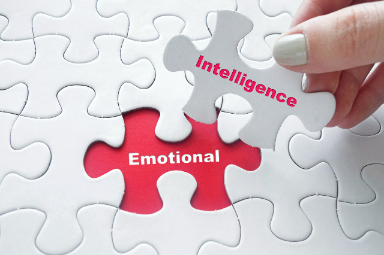

Inteligența emoțională (EQ) este definită prin abilitatea de a percepe, evalua și controla propriile emoții. În vreme ce această conștiință de sine este importantă, la fel de valoroase se dovedesc și abilitățile de a înțelege, interpreta și răspunde la nevoile emoționale ale celor din jur.
Există specialiști care susțin că inteligența emoțională poate fi doar nativă, dar și experți care o consideră o calitate care poate fi educată, alimentată, îmbunătățită. De un lucru, putem, însă, fi siguri: sunt situații când inteligența emoțională este mai importantă decât IQ-ul.
Iar dacă pentru măsurarea coeficientului de inteligență avem repere concrete - media încadrându-se în jurul valorii de 100, cu o minimă de 85 și o maximă de 115 - în ceea ce privește inteligența emoțională, cum am putea să o măsurăm, care sunt indicii corecți, ce metode de testare există?
Această componentă se referă la capacitatea de a identifica propriile emoții, valori și aspirații.
Flexibilitatea este cheia acestei componente. Odată ce ești stăpân pe propriile emoții, beneficiile se vor reflecta în atitudinea ta optimistă, dar și în capacitatea de a te adapta unor situații noi.
Această abilitate ce ține de inteligența emoțională este foarte importantă. Persoanele cu un EQ mare sunt motivate de lucruri care depășesc barierele recompenselor externe precum faima, bogăția, recunoașterea sau ovațiile celorlalți. În locul acestora, motivația intrinsecă se bazează pe pasiunea de a-ți împlini propriile obiective și nevoi.
Empatia se referă la abilitatea de a recunoaște emoțiile celorlalți și este o componentă esențială a inteligenței emoționale. Însă, empatia nu se limitează la această identificare, ci include răspunsul sau reacția la acestea. Această dinamică ne determină să fim mai blânzi cu cei triști, să ne bucurăm pentru succesul celor din jur, să căutăm soluții pentru problemele lor.
Deși în anumite contexte se pot suprapune cu empatia, abilitățile sociale includ mai degrabă capacitatea de a interacționa și de a comunica într-un mod coerent și productiv cu ceilalți. Este o calitate pe care se pune cu atât mai mult preț în mediul profesional, unde capacitatea de a asculta activ, de a comunica, de a te exprima nonverbal, dar și abilitățile de leadership sau persuasiunea - toate incluse în categoria abilităților sociale - își pot spune cuvântul asupra parcursului profesional și a reușitelor ce țin de carieră.